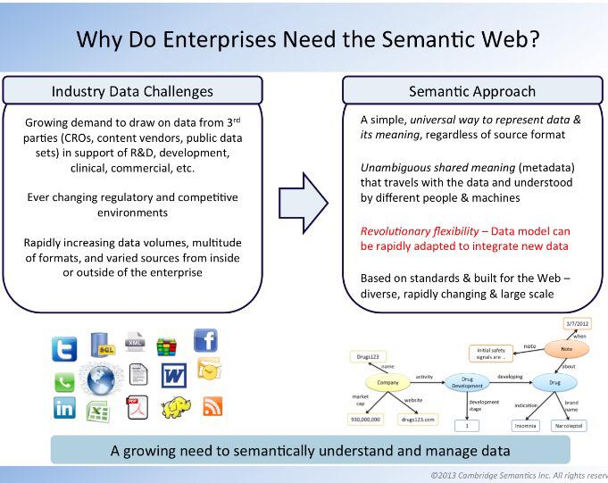

September 2015
Reading @jpmccu's PhD dissertation tw.rpi.edu/web/doc/websig… Very interesting: #nanopubs + #FRIR (extending #FRBR) + PROV ontology
PhUSE CS Webinar, Semantic Technology Working Group youtu.be/skEcerECfuE <- Nice overview by Frederik Malfait
Clinical trial data lifecycle goes beyond Submission - Transparency and Reuse @jcdecker71 twitter.com/phusetwitta/st…
Nice overview of the Semantic Technology work [21:15-37:00] by Frederik Malfait #cdisc #SemanticWeb #LinkedData twitter.com/phusetwitta/st…
Yes - open, and linked, data make a difference. See ait.gu.se/informatik/lin… #linkeddata twitter.com/carlbildt/stat…
Excellent slide by @nomini, prev FDA CDER now Semantica, from Armando's blog/presentation aolivamd.blogspot.com/2015/09/intro-…

Excellent presentation. Very interesting given Armando Oliva's experiences from FDA CDER. twitter.com/nomini/status/…
Pointing "SQL-master" colleague to @wikidata's SPARQL query.wikidata.org? and examples to get him started m.mediawiki.org/wiki/Wikibase/…
.@dpawson @JeniT Yes a MOOC version of @ODIHQ's Open Data Science course would be nice theodi.org/courses/open-d…
Looking forward attending PhUSE Conference 2015 "Clinical Data Science - From Data to Knowledge" phuse.eu/annual-confere…
Clinical & Translational Science Ontology Workshop 24-25 Sep ncorwiki.buffalo.edu/index.php/CTS_… <- The agenda looks v. interesting #semanticweb #ctdata
Making secondary analysis easier: CSR analysis results and metadata as RDF Data Cubes phusewiki.org/wiki/index.php… twitter.com/trished/status…
Time to add a new name to my #FollowFriday 2015 list medium.com/@kerfors/my-fo… after the summer. Will think and get back tomorrow.
4 year old blog post "Data & context formated & organised for computers & humans to use it in new & meaningful ways" kerfors.blogspot.se/2011/09/semant…
Nice webinar: Axiomatics Boot Camp 201 - JSON and REST for dynamic authorization axiomatics.com/events/event/5… #XAMCL #ABAC
#SWAT4LS tutorial: Semantic Representations of Clinical Care and Clinical Trial Data swat4ls.org/workshops/camb…
Mastering Controlled Vocabularies (CVs) to faciliate succesful Regulatory Information Management slideshare.net/MichielStam/ma…